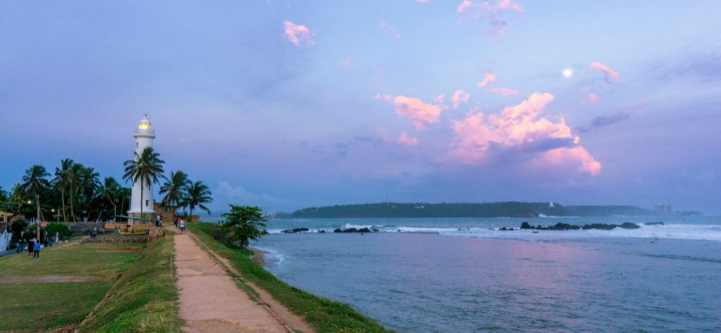
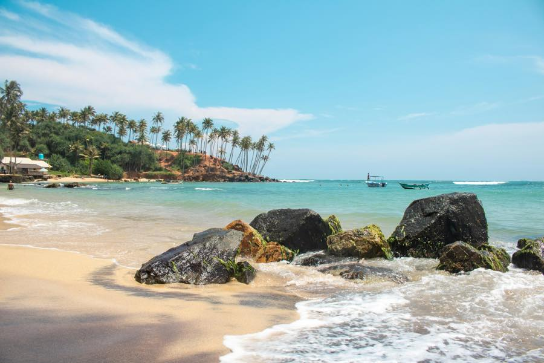
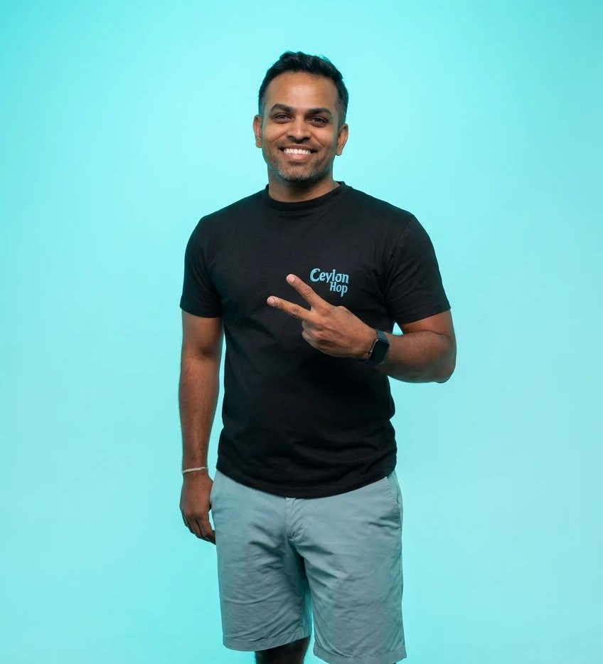

Private transfer · door to door
Your own car, fixed price
Free cancellation up to 24h before · no change fees

Your own air-conditioned car or van, door to door, at a fixed price.
Private transfer · door to door
Free cancellation up to 24h before · no change fees
No shared van runs Mirissa → Galle. For three or more, a private car often works out close to a seat price. Or start a ride on the board →
This is less a transfer than a slow reveal of the south coast: Weligama's stilt-fishing posts, Koggala's island-dotted lake, Unawatuna's curve of sand, then Galle Fort's Dutch ramparts. Private cars run door to door, stopping wherever catches your eye.

The price you see is the price you pay — no haggling at the kerb.
Picked up exactly where you are, dropped exactly where you’re staying.
Photos, lunch, a quick sight — tell your driver and they’ll build it in.
Up to 24 hours before, and no fees to change your date.

“We started Ceylon Hop because we were tired of watching travellers overpay and stress over getting around. Every guest rides with a driver we’d trust with our own family.”Roshen — Co-founder, Ceylon Hop
Something we haven’t covered? We reply within minutes, 7 days a week.
Chat on WhatsAppPlan for approx. 40 km · 60 min by road. Your driver takes the fastest safe route and can add stops along the way.
A private car is from $29 and an air-conditioned van (up to 6 people) from $49.99, fixed and door to door — the price you see is the price you pay.
Not at the moment — this route is private-only, so you get the whole vehicle to yourself. If you'd like to share, message us and we'll suggest the nearest route travellers are pooling.
Of course. A private transfer is door to door and yours for the trip — tell your driver where you'd like to stop for photos, lunch or a quick sight and they'll build it in.
Get an instant fixed price and book online, or message us on WhatsApp and we'll arrange it. You pay securely online to confirm your booking.